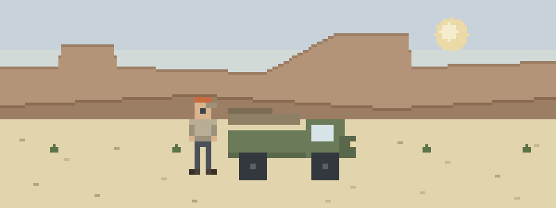

Camp, track, and winch line
- Under load. The winch is singing and a hand is where it shouldn’t be. Recovery gear takes fingers and forearms fast, and the bleeding control you learned is suddenly the whole evening.
- The camp kitchen. Boiling water off the tailgate stove, straight down a leg. Burns get cooled, covered, and judged honestly — some of them end the trip.
- The ambulance you’re sitting in. Your co-driver is gray and rubbing his chest, and the map says fourteen hours of track. Drive, wait, or call for help — the answer isn’t automatic in either direction.
Load these five first
Pack them in this order:
- Bleeding, Wounds & Burns — the recovery-gear and camp-stove curriculum
- Medical Emergencies — chest pain and denial, two days of track from a clinic
- Shock — the trend that decides whether the vehicle is fast enough
- Evacuation — drive out versus call — exhaust communication before you spend a day of track
- Kits & Preparation — a vehicle kit that earns its cubby
Then pressure-test it
Interactive scenarios — one decision at a time, tempting mistakes included, debrief at the end:
- Stop Peeking — a deep laceration and the discipline of pressure
- It’s Not Indigestion — the campsite chest pain nobody wants to name
- Two Go, One Stays — the evac decision when the phone is a paperweight
The certification question, honestly. “Wilderness First Aid” isn’t a regulated credential. No government body defines what a WFA card means — it means whatever the company that printed it says it means. What counts in front of a patient is whether you can do the work. This course teaches the work, free, and issues a record of completion — not a certificate, and we won’t pretend otherwise. There’s no overlanding license, and a winching clinic from a real recovery school prevents more injuries than any bandage. If an expedition, club, or guide operation wants a WFA or WFR card, take that class — you’ll arrive fluent. If nobody requires you to hold a card, what you need are the skills, not the laminate.
What this is
Fifteen lessons, a 40-question knowledge check, sixteen practice scenarios, a printable field reference card, and a kit checklist. Free, no account, nothing recorded about you, source on GitHub. It teaches decision-making, not hands-on skill — practice the hands-on parts on a real, padded, complaining friend.
Other throttle-and-altitude people: snowmobilers & snowbikers · paragliders, hang gliders & PPG pilots · remote drone operators & aerial surveyors